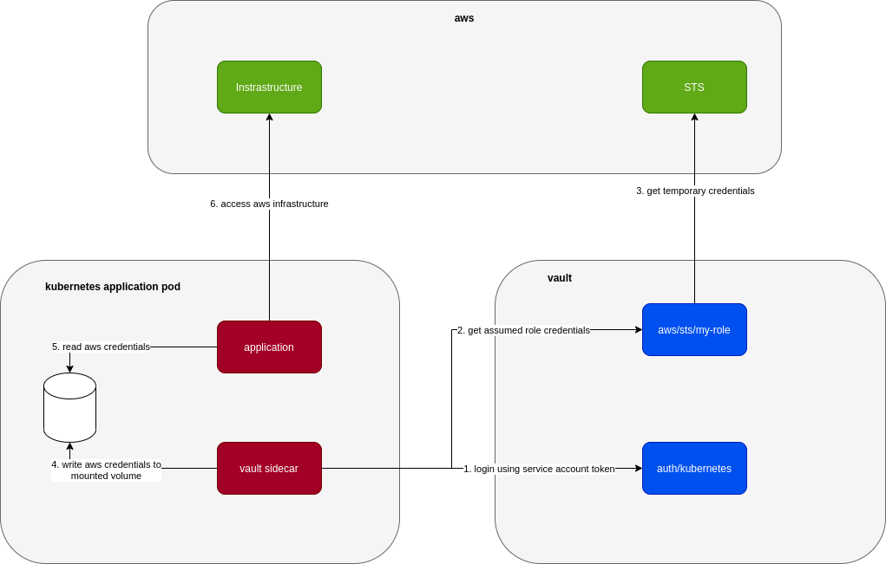
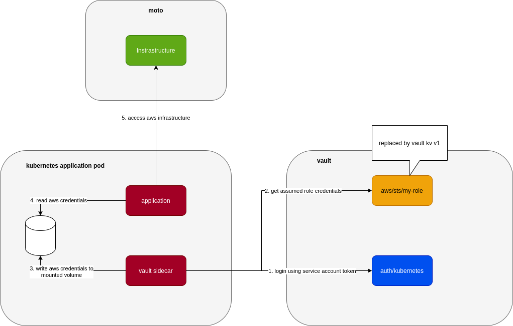

Introduction
Currently I’m working on a system that’s deployed to Kubernetes and uses Hashicorp Vault AWS Secrets Engine to retrieve temporary credentials from assumed roles when it needs to interact with AWS infrastructure.
The system uses a sidecar that’s built on top of vault agent to get AWS credentials as below:

In local, the application is deployed to minikube in a very similar way (.i.e. including the vault sidecar, aws infrastructures are replaced with either localstack or moto) so that we can catch issues as early as we can. This poses the challenge of how to let vault sidecar work safely with AWS, in particular the part where it gets AWS temporary credentials. We can let everyone work directly with a test AWS account but there are many issues with that like: troublesome setup, slow, maintain/cleanup real infrastructure in AWS.
So we come up with 2 ways to work around this
Use Vault KV Secrets Engine V1
to replace Vault AWS Secrets Engine. It looks like this:

Due to the fact that we can use the same way (vault read or vault write) to work with different secrets engine, we can kind of trick vault into thinking that a key-value v1 secrets engine mounted at aws path is an aws secrets engine. As long as we put the test credentials into this kv v1 secrets engine in the same way that vault expects from an aws secrets engine, vault doesn’t care that they are different engines.
So when starting up our vault server in minikube, we setup kv v1 as aws secrets engine as below:
|
|
And we can put test access key, secret key, security token at path aws/sts/my-role, the path where vault expects if it’s to request temporary credentials using assumed role my-role
|
|
This is simple and works quite well if the vault sidecar only uses read to request temporary credentials (.i.e. vault read aws/sts/my-role). Once it starts to use write like vault write aws/sts/my-role ttl=60m, it’s broken because underlying engine is still key value. That write command just overwrites key aws/sts/my-role with ttl=60m and all the pre-setup test credentials at that path are lost.
That’s why we need to come up with the 2nd trick:
Use AWS Secrets Engine with Moto
Turn out Moto is able to simulate IAM quite well that we can point vault aws secrets engine to it without any problem. Localstack also has suppot for IAM but it’s only available in its Pro version, makes it not so attractive for local development.
When using Moto, our setup is even closer to how it works in production:
Basically instead of AWS, we just plug in Moto. The local setup to point local vault to Moto is a bit more involved:
- First we need to enable aws secrets engine:
|
|
- and then configure aws secrets engine to point to Moto instead of AWS:
|
|
- finally create the role to be assumed in aws secrets engine
|
|
Code
Example code for above 2 approaches can be found at vault-fake-aws